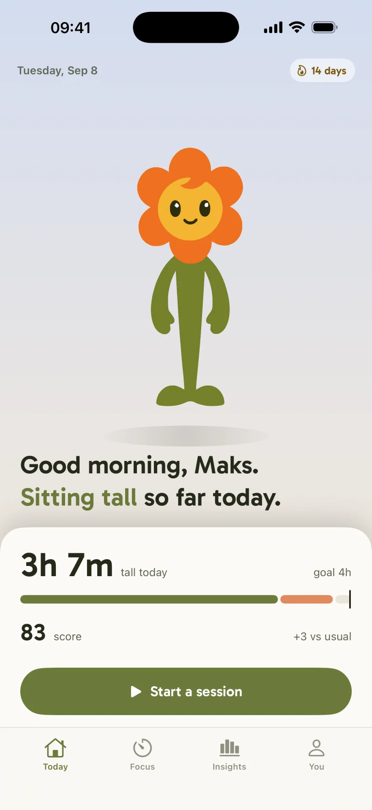

Sit tall through the whole work block.
Pillar reads the angle of your head from the motion sensors in the AirPods you already wear, and tells you — quietly, in your ear — the moment you start to slump. No camera. Nothing new to buy. Nothing leaves your phone.
Coming to iPhoneiOS 18.5 or later
- The earbuds are the sensorAirPods Pro, AirPods 3 or 4, or AirPods Max — no strap, no clip, no camera.
- Nothing leaves your phoneHead position is read and analysed on the device. Raw motion never goes anywhere.

Nobody feels themselves slumping.
It happens over about forty minutes, a degree at a time, while you are reading something difficult. The head goes forward, the shoulders follow it, and the first signal your body sends arrives hours later as a stiff neck at the end of the day — long past the point where you could have done anything about it.
Pillar puts a number on the part you cannot feel. One session, and the afternoon stops being one undifferentiated block of sitting and becomes minutes you sat tall and minutes you did not.
-
goal 4h3h 07mtall today
- Sat tall 3h 07m
- Slumped 52m
Three steps, and your posture has a number
There is no setup wizard to survive and no baseline pulled from a population average. Pillar measures you, once, and then stays out of the way.
-
Measure yourself
Two reads of five seconds: sit the way you would like to sit, then slump the way you actually do. Those two angles are your threshold, and you can redo them whenever your desk changes.
Your baselinecomfortably tall6°slumped19° -
Start a session and work
Open-ended, or a Pomodoro block with the breaks built in. Pillar watches head pitch and nudges you when your head has been forward long enough to be a slump rather than a glance at your keyboard.
In your ear, 40 minutes inEase your head up. One haptic tap. It stops the moment you straighten. -
Finish and see it
The session closes with a score out of 100, the minutes you held, and how many nudges you answered. Over weeks those sessions become a trend and one pattern worth acting on.
Session doneScore 84 · 52m tall 4 nudges · 3 answered within 20 seconds
Free to install. Calibrate, run a session and see your first score before you pay for anything.
What it actually does while you work
Five surfaces, each doing one job. None of them asks you to look at your phone during the part that matters.
A nudge you feel, not a notification you swipe away
The signal arrives where your ears already are: a haptic tap, a soft chime, or both. It fires on your angle, not a generic one, and only after your head has stayed forward long enough to mean something. Straighten up and it is gone — there is no second reminder and nothing to dismiss.
Sensitivity, signal and quiet hours are all adjustable.
17° forward · nudged 4 seconds ago
Your angles, not an average
Necks are not the same length and desks are not the same height, so a threshold borrowed from a study fires at the wrong moment for most people. Calibration takes ten seconds: sit comfortably tall, then slump. Pillar keeps both numbers and puts the nudge line between them.
Redo it when you change chairs, monitors or desks.
Hold it for five seconds. Breathe normally.
-
6°comfortably tallsaved
-
19°slumpedsaved
-
12°nudges from heremedium
The timer is the reason to keep the AirPods in
Focus is a Pomodoro that happens to know how you sat. Set the focus length, the short and long rests and how many cycles; the timeline shows the shape of the afternoon before you start it. Posture is watched during focus and left alone during the break, which is when you should be moving anyway.
Focus, rests and cycles are all yours to set.
4 cycles · ends at 16:40
It keeps going with the phone face down Live Activity
The session lives on the Lock Screen and in the Dynamic Island, so the timer, the state and the score are one glance away without unlocking anything. That is the whole point: the phone should not be the thing you look at while you are trying to work.
Widgets and the Live Activity are part of Premium.
Proof over weeks, not a dashboard
Insights answers four questions in order and then stops: am I getting better, how much did I sit tall each day against my goal, am I regular, and when do I slip. One chart, three numbers, and a single sentence naming the one thing to change. No heat map you will never read twice.
The slip sentence appears once there are three sessions to read.
-
22h 32mtall this week+2h 10m
-
3 of 7days on goallast week 2
-
14 daysstreakbest 14
One change: you slip most around 2pm. A five-minute break before it starts costs less than the hour after it.
Every part of it can be turned down
Sensitivity from light to strict. Haptic, chime or both. Quiet hours so nothing fires during a call. Background tracking off if you would rather it only run with the app open. And two buttons that clear your history for good, with no account to close first, because there was never an account.
Your data is yours to delete from inside the app.
- SensitivityMedium
- Signal & timingHaptic + sound
- Quiet hoursOff
- Track in background
- Mix with my music
- Reset scoreClear history
- Delete my dataStart from setup
The reward is at the end, where it belongs
Nothing about the live session is celebratory — it is a bar, a word and a timer, and it stays quiet. The warmth is saved for the moment you finish: the score, the longest stretch you held, and the streak ticking over one more day.
That is the whole loop. Start it, forget it, and let the finish tell you how it went.
-
88score+5 vs usual
-
31mlongest tall stretchof 52m
-
15 daysstreak4 nudges · 3 answered
A posture app has to watch you. This one does it without seeing you.
Every other way of measuring posture points a lens at you or straps something to your back. Pillar reads one number — how far your head is tipped forward — from a sensor that is already in your ear, and does the reading on your own device.
- No camera, ever. There is no camera permission, no photo of you and no video. The app cannot see the room you are sitting in.
- The analysis runs on your iPhone. Raw head-motion data never leaves the device, and there is no account and no password to create.
- You can wipe it in two taps. Session history lives in local app storage and the You tab clears it whenever you want.
The complete list, including the handful of anonymous events we do send, is in the Privacy Policy.
What you need to run it
Pillar is iPhone-only, because it depends on the head-motion data iOS reports from Apple's own earbuds. There is no Android version and none is planned.
- iPhone
- iOS 18.5 or later.
- Headphones
- AirPods Pro (1st, 2nd or 3rd generation), AirPods (3rd or 4th generation), or AirPods Max. Older AirPods have no motion sensors and cannot report head position.
- Permission
- Motion & Fitness. The app opens and works without it, but it cannot measure your posture.
- What is measured
- Head pitch — how far your head is tipped forward — from the AirPods motion sensors. Nothing else.
- Where it is measured
- On your iPhone. Raw motion never leaves the device.
- Account
- None. No name, email, phone number or password is asked for or created.
- Price
- Free to install. Premium is a subscription — see the Subscription Terms.
- What it is not
- A medical device. Pillar does not diagnose, treat or prevent any condition.
Questions people ask first
How can AirPods measure my posture?
AirPods Pro (any generation), AirPods (3rd and 4th generation) and AirPods Max contain motion sensors that iOS exposes as head-motion data. Pillar reads the pitch of that data — how far your head is tipped forward — and compares it against the angles you measured yourself during calibration. It never sees your body, only the angle of your head.
Which AirPods work with Pillar?
AirPods Pro (1st, 2nd and 3rd generation), AirPods (3rd and 4th generation) and AirPods Max. Older AirPods have no motion sensors and cannot report head position. You also need an iPhone running iOS 18.5 or later, and Motion & Fitness permission — the app opens and works without it, but it cannot measure your posture.
Does Pillar use my camera?
No. There is no camera access, no photo of you and no video. The only sensor Pillar reads is the motion sensor already inside your AirPods.
Does my data leave my phone?
Head-position data is read and analysed on your iPhone, and raw motion never leaves the device. Your session history lives in local app storage and you can wipe it from the app at any time. A short, itemised list of the anonymous analytics events we do send is in the Privacy Policy.
What does a nudge feel like?
A haptic tap, a soft chime in the AirPods, or both — you choose. It fires when your head has been forward past your own threshold for long enough that it is a slump and not a glance at the keyboard, and it stops the moment you straighten.
Will it nag me all day?
Pillar only watches during a session you started. Sensitivity is adjustable, quiet hours silence nudges on a schedule, and a nudge disappears as soon as your head comes back up rather than repeating at you.
Can I use it with music or on a call?
Yes. Sound cues mix with whatever is playing, and you can switch to haptic only. Head tracking works whether or not audio is playing, as long as both AirPods are in.
Is Pillar a medical device?
No. Pillar is a posture-awareness and focus tool. It does not diagnose, treat or prevent any condition, and it is not a substitute for advice from a clinician.
Is Pillar free?
Pillar is free to install, and the free tier includes calibration, one session a day and the Today screen. Premium unlocks unlimited sessions, the Pomodoro focus timer, full Insights and history, all nudge sounds and the widgets. The current plans, the trial and how to cancel are on the Subscription Terms page.
Sit tall through the next work block.
Free to install. Calibrate, run a session, and see your first score before you pay for anything.
Coming to the App Store for iPhone. Requires iOS 18.5 or later and AirPods with motion sensors.